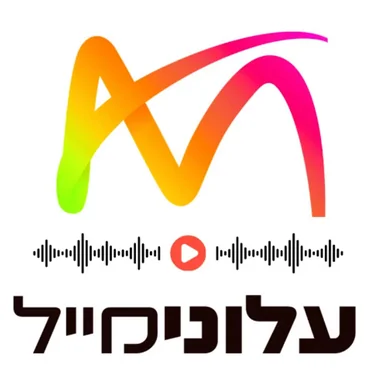

עלונימייל | Alonimail
Alonimail
על הפודקאסט וקישורים
השיעורים השבועיים של הרבנים הגדולים - במקום אחד!! רוצים להתעדכן בכל שיעור חדש? לחצו על 'הרשמה למינוי' והפעילו את ה -🔔 אהבת את השיעור? שלח/י קישור לחבר/ה, תפרגנ/י!!

Alonimail
השיעורים השבועיים של הרבנים הגדולים - במקום אחד!! רוצים להתעדכן בכל שיעור חדש? לחצו על 'הרשמה למינוי' והפעילו את ה -🔔 אהבת את השיעור? שלח/י קישור לחבר/ה, תפרגנ/י!!